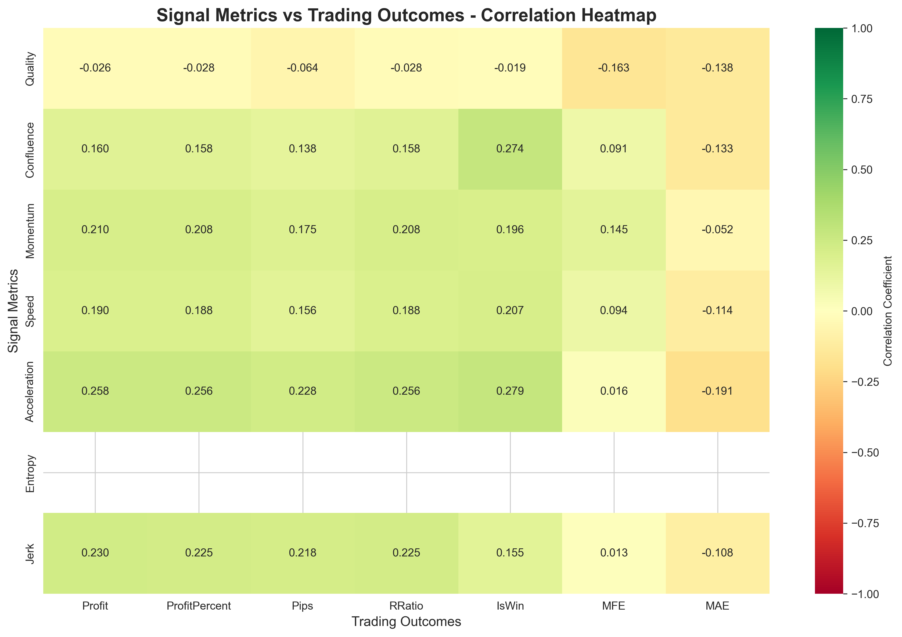
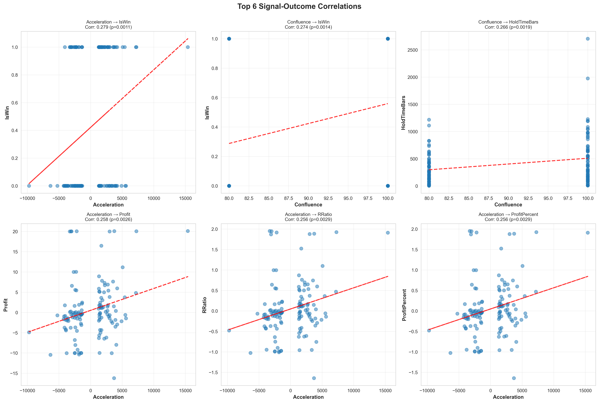
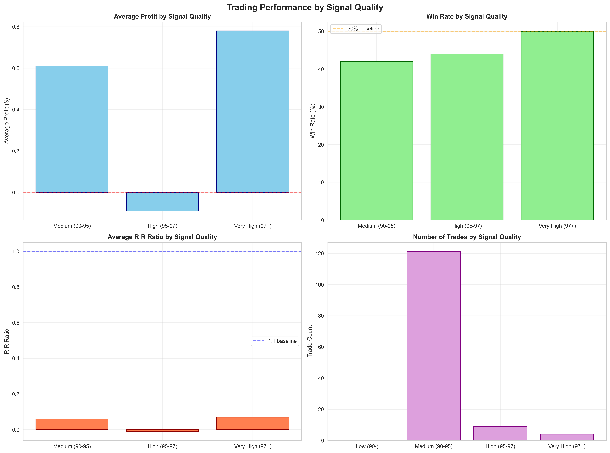

NAS100 v3.1.1 Backtest Results | November 12, 2025
This comprehensive analysis correlates signal metrics with trading outcomes across 134 matched trades to identify which signal features have the biggest impact on profitability. Using Pearson and Spearman correlation analysis with statistical significance testing, we've identified the most predictive metrics for trading success.
| Rank | Signal Metric | Outcome Metric | Correlation | P-Value | Significance |
|---|---|---|---|---|---|
| 1 | Acceleration | Win Rate | +0.279 | 0.001 | ✓ Highly Significant |
| 2 | Confluence | Win Rate | +0.274 | 0.001 | ✓ Highly Significant |
| 3 | Confluence | Hold Time | +0.266 | 0.002 | ✓ Highly Significant |
| 4 | Acceleration | Profit | +0.258 | 0.003 | ✓ Highly Significant |
| 5 | Acceleration | R:R Ratio | +0.256 | 0.003 | ✓ Highly Significant |
| 6 | Jerk | Profit | +0.230 | 0.008 | ✓ Significant |
| 7 | Acceleration | Pips | +0.228 | 0.008 | ✓ Significant |
| 8 | Jerk | R:R Ratio | +0.225 | 0.009 | ✓ Significant |
| 9 | Momentum | Profit | +0.210 | 0.015 | ✓ Significant |
| 10 | Speed | Win Rate | +0.207 | 0.017 | ✓ Significant |
| Quality Level | Avg Profit | Win Rate | Avg Pips | Avg R:R | Trade Count |
|---|---|---|---|---|---|
| Medium (90-95%) | $0.61 | 42% | 46.91 | 0.06 | 121 |
| High (95-97%) | -$0.09 | 44% | -7.06 | -0.01 | 9 |
| Very High (97+%) | $0.78 | 50% | 18.98 | 0.07 | 4 |
Strong correlation. Momentum is highly predictive for bullish trades. Apply stricter momentum filters.
Weak correlation. Momentum is 5x less important for bearish trades. Focus on other metrics instead.
| Rank | Metric | Profit Correlation | Win Rate Correlation | Overall Impact | Recommendation |
|---|---|---|---|---|---|
| 1 | Acceleration | +0.258 ⭐⭐⭐ | +0.279 ⭐⭐⭐ | Very High | Increase weight significantly (→30%) |
| 2 | Confluence | +0.160 ⭐ | +0.274 ⭐⭐⭐ | Very High | Use as binary filter (100% only) |
| 3 | Jerk | +0.230 ⭐⭐ | +0.155 ⭐ | Moderate-High | Increase weight moderately (→15%) |
| 4 | Momentum | +0.210 ⭐⭐ | +0.196 ⭐⭐ | Moderate | Keep weight, apply directionally (15%) |
| 5 | Speed | +0.190 ⭐ | +0.207 ⭐⭐ | Moderate | Maintain moderate weight (10%) |
| 6 | Quality | Weak | Weak | Low | Reduce weight (→5%) |
| 7 | Entropy | ~0.00 ❌ | ~0.00 ❌ | None | Remove from calculations (→0%) |
Equal weighting doesn't account for predictive power differences. Results in suboptimal signal quality.
Complete correlation matrix showing relationships between all signal metrics and trading outcomes
How to read:
Six strongest signal-outcome relationships with regression lines
Key observations:
Trading performance breakdown across different signal quality levels
Insights:
Only trade 100% confluence signals or significantly reduce position size for 80% confluence.
Expected Impact: Shift from -$0.56 to +$1.67 average profit per trade (+193%)
Implementation: Add confluence filter to entry logic before trade execution
Add acceleration threshold: Only trade signals with acceleration above the median value.
Expected Impact: Higher win rate (up to 56%) and better R:R ratios
Implementation: Calculate median acceleration and add as minimum threshold
For BUY signals: Require momentum > threshold. For SELL signals: Rely less on momentum, more on other factors.
Expected Impact: Improved BUY signal profitability (5x more important than for SELL)
Implementation: Add conditional momentum filters based on signal direction
Adjust metric weightings based on correlation analysis:
Since acceleration is the strongest predictor, investigate whether its calculation can be enhanced or optimized.
Research: Why is acceleration so predictive? Can we improve its sensitivity?
Why do 95-97% quality signals underperform? Is there overfitting in the quality calculation?
Action: Deep dive analysis of the 9 high-quality trades that performed poorly
Why is 80% confluence so poor? Are specific confluence combinations better than others?
Action: Break down confluence by component combinations to find optimal patterns
Test these findings on v3.1.0, v3.2, and other backtest versions to ensure robustness.
Action: Run correlation analysis on at least 2-3 other datasets
Download comprehensive reports and raw data files for further analysis
CSV and JSON files for custom analysis and programmatic access
| File | Description | Rows/Records | Use Case |
|---|---|---|---|
| correlation_results.csv | Complete correlation table with statistical tests | 56 correlations | Statistical analysis, custom queries |
| merged_signals_trades.csv | Combined signals + trades dataset | 134 trades | Further analysis, custom visualizations |
| analysis_summary.json | Machine-readable summary statistics | Key metrics | Programmatic access, dashboards |
High-resolution images for presentations and reports
To run the analysis on different datasets:
/analytics/signal_trade_correlation_analysis.pypython signal_trade_correlation_analysis.py/analytics/signal_analysis_output/{kind=link}
{kind=link}
{kind=link}